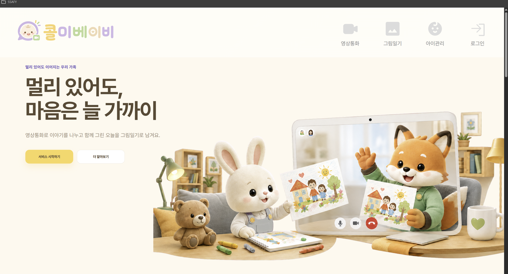
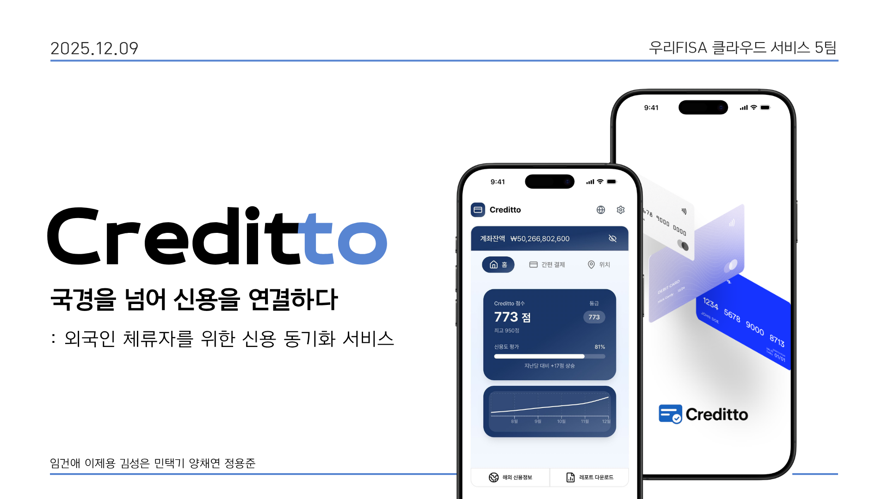

01BACKEND · INFRA
AI REALTIME COMMUNICATION
Call Me Baby
부모와 아이의 영상통화에 AI 대화 주제, 공동 그림판, 그림일기를 연결한 서비스입니다
- 맡은 일
- 통화방·Redis 상태관리·그림일기 API, CI/CD와 배포 인프라
- 기준
- dev/prod 분리, 변경 감지 배포, 헬스체크와 계층별 로그 추적
BACKEND DEVELOPER · IM GEONAE
정확하게 쌓은 기반은
다음 변화의 속도가 됩니다
PROJECTS · 2026
AI REALTIME COMMUNICATION
부모와 아이의 영상통화에 AI 대화 주제, 공동 그림판, 그림일기를 연결한 서비스입니다

FINANCE · DATA INTEGRITY
CROSS-BORDER CREDIT SERVICE
외국인의 기존 신용 정보를 연계해 국내 금융 서비스 이용을 돕는 신용 동기화 서비스입니다
PRINCIPLES
처음부터 정확한 기준을 세우면 재작업은 줄고
코드는 더 오래 재사용할 수 있습니다
정상 흐름뿐 아니라 경계 조건과 실패 상황을 함께 정의합니다
환경 분리와 리뷰 규칙처럼 반복되는 결정을 코드와 프로세스로 만듭니다
증상을 덮지 않고 로그와 실행 흐름을 따라 재현 가능한 해결책을 찾습니다
EXPERIENCE · CAPABILITY
C++ MFC ERP/CAD와 C#/.NET, MSSQL 환경을 분석하고 장애를 재현해 로그인 실패 문제를 복구했습니다
금융 도메인 기반 백엔드·인프라를 학습하고 6인 프로젝트에서 팀장으로 서비스 구조와 협업 기준을 정리했습니다
알고리즘과 CS 기본기를 다지고 백엔드·인프라 프로젝트를 통해 구현의 근거를 넓히고 있습니다
Java · Spring Boot · JPA · Redis · MySQL · MSSQL
Docker · Jenkins · AWS EC2 · GitHub Actions
C++ · MFC · C# · .NET
정보처리기사 · SQLD · ADsP